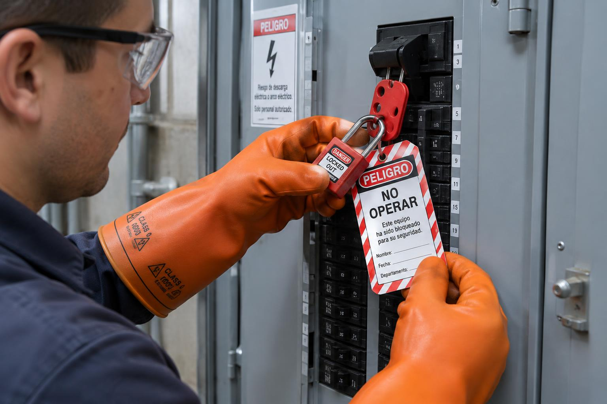
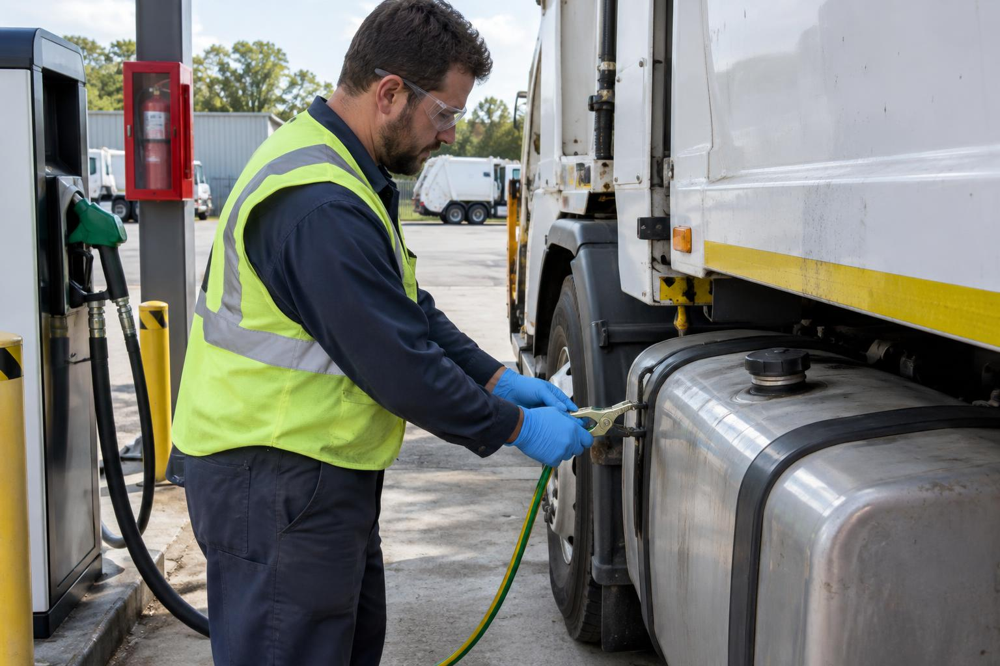
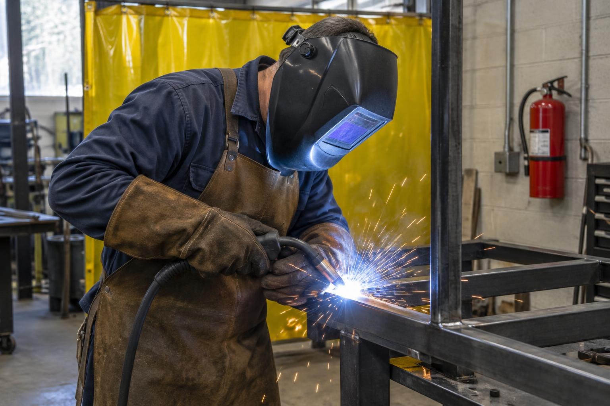
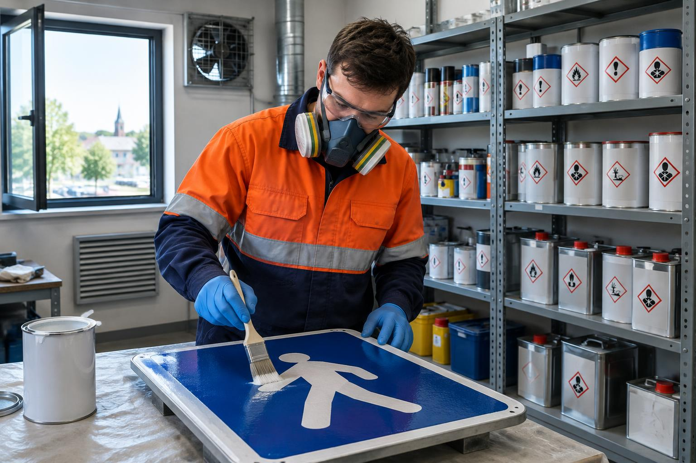

🛡️Todas las tareas
Regla de oro: ninguna tarea es tan urgente como para hacerla sin seguridad.
AntesParar y evaluar el entorno: cables, piso, vehículos en maniobra.
EPPCalzado de seguridad, ropa de trabajo; casco si hay riesgo de caída de objetos.
🚚Maquinaria, camiones y escaleras
Regla de oro: tres puntos de apoyo en todo momento.
AntesSubir y bajar siempre de frente a la máquina.
EPPCalzado antideslizante, guantes con buen agarre.
⚡Tableros y riesgo eléctrico

Regla de oro: todo conductor tiene tensión hasta comprobar lo contrario con instrumento.
AntesVerificar contratapa y puerta del tablero; aplicar bloqueo y etiquetado (LOTO).
EPPGuantes dieléctricos de la clase adecuada, protección facial, calzado dieléctrico.
⛽Despacho de combustibles

Regla de oro: conectar la puesta a tierra antes de abrir. Sin fuentes de ignición cerca.
AntesMotor detenido, contacto cortado.
EPPGuantes de nitrilo, antiparras, ropa de algodón.
🔥Soldadura y oxicorte

Regla de oro: despejar 10 m de combustibles; viga 30 min al terminar.
AntesFirmar el Permiso de Trabajo en Caliente.
EPPCareta fotosensible, delantal y guantes de descarne, protección respiratoria para humos.
⚙️Amoladoras
Regla de oro: nunca retirar la guarda. Disco apto para las RPM de la máquina.
AntesVerificar guarda y estado del disco.
EPPAntiparras y protector facial, protector auditivo, guantes.
🔧Mecánica pesada y fosas
Regla de oro: nunca trabajar bajo un vehículo apoyado solo en el cric.
AntesCalzar ruedas y colocar caballetes.
EPPCalzado de seguridad, antiparras, guantes.
♻️Recolección de residuos
Regla de oro: no empujar ni comprimir bolsas con manos o pies.
AntesColocarse guantes anticorte.
EPPGuantes anticorte, calzado de seguridad, chaleco reflectivo.
🎨Pinturas y solventes

Regla de oro: leer la ficha de datos de seguridad antes de usar un producto.
AntesVerificar ventilación y envases cerrados.
EPPRespirador con filtro para vapores orgánicos, guantes de nitrilo, antiparras.
🧹Limpieza
Regla de oro: no mezclar lavandina con amoníaco ni ácidos: libera gases tóxicos.
AntesColocar el cartel de piso mojado.
EPPGuantes de caña larga, calzado antideslizante.
La entrega de EPP debe registrarse en el formulario de la Res. SRT 299/11.
 360° · Interactivo
360° · Interactivo